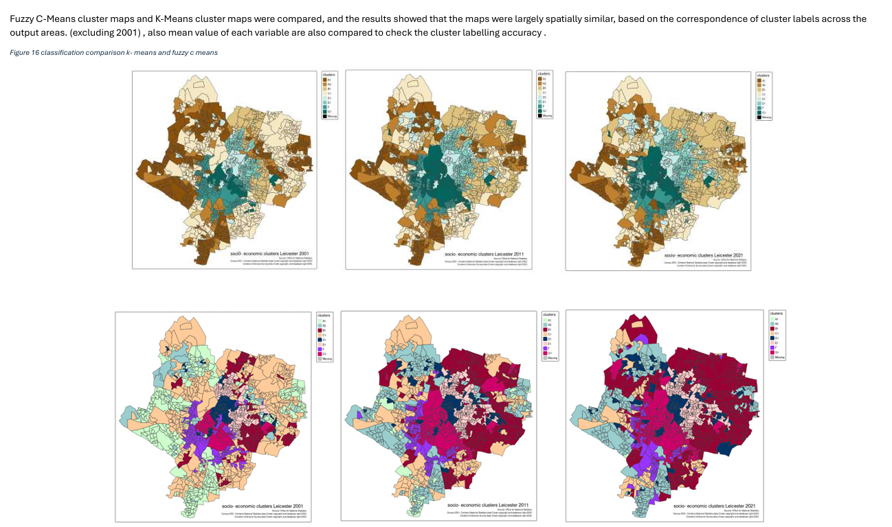

I am a highly motivated and detail-oriented professional with a strong curiosity for technology, data and problem-solving. I enjoy developing data-driven solutions and efficient workflows to analyse complex information, identify patterns and solve real-world problems. I have professional experience as a Research Assistant, Demonstrator, Administrator and Transport Coordinator I am experienced in working with geospatial data, historical data, satellite imagery, socio-economic data, environmental data, air quality, climate, natural hazards, Geology and logistics I hold an MSc in Geographical Data Science from the University of Leicester (2025) and a BSc (Hons) in Earth Resources Engineering from the University of Moratuwa (2022), specialising in Earth resources Engineering with GIS and remote sensing.


AIESEC volunteering experience in Sri Lanka.